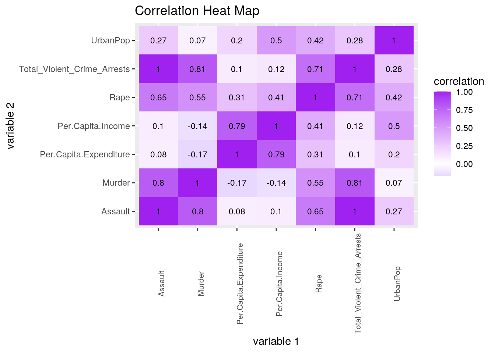
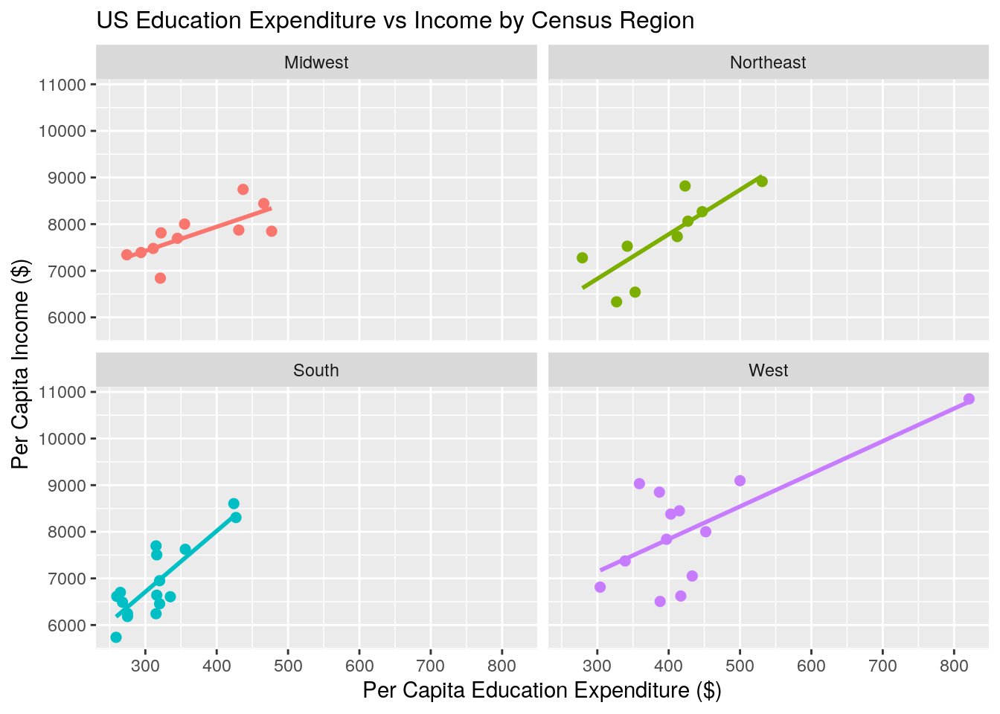
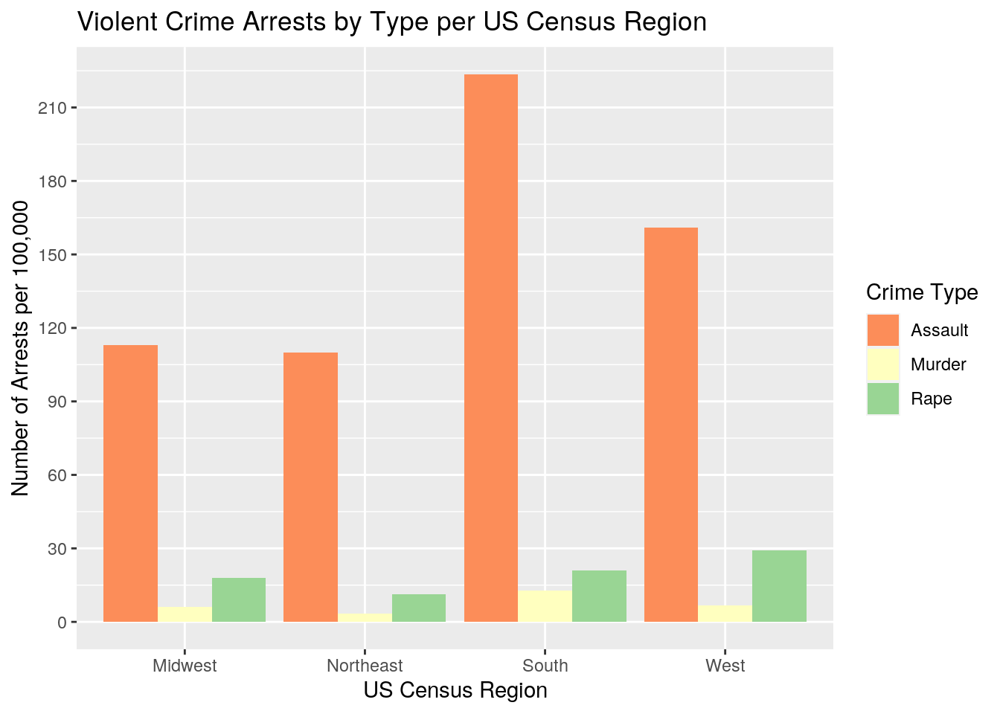
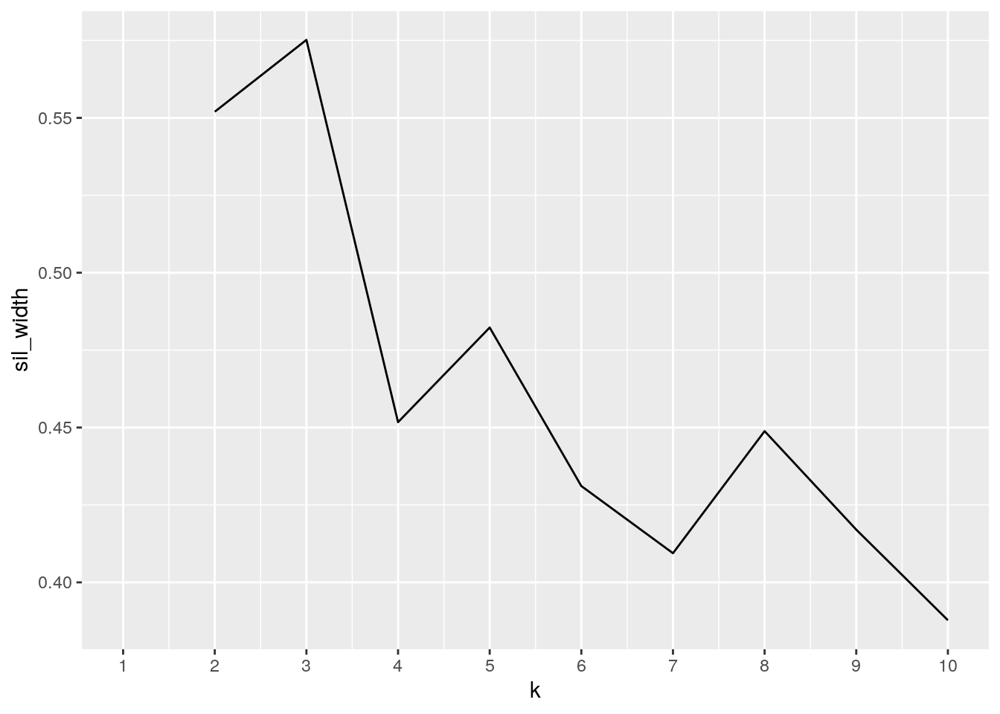
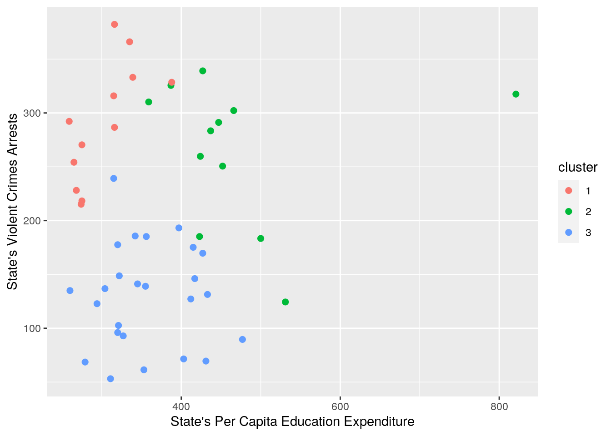
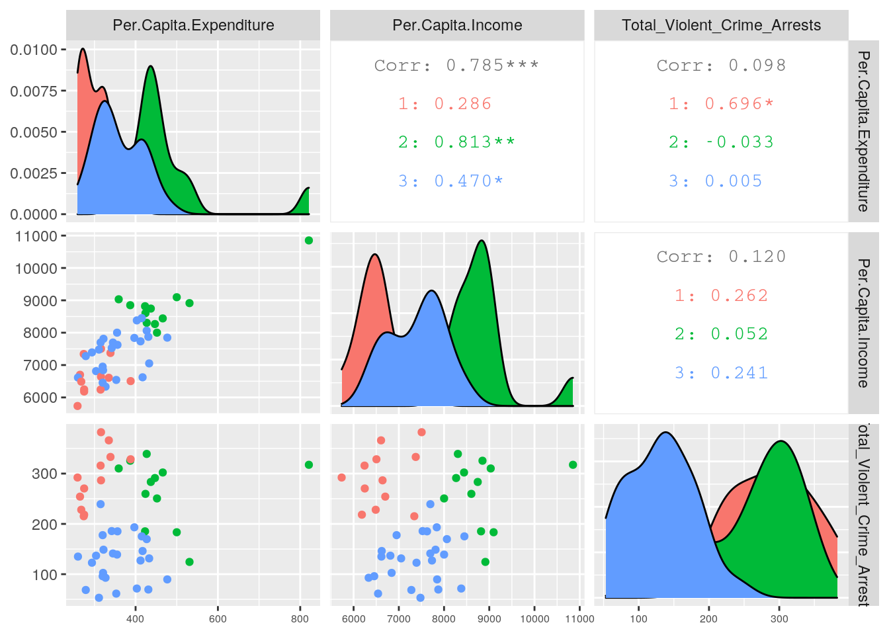
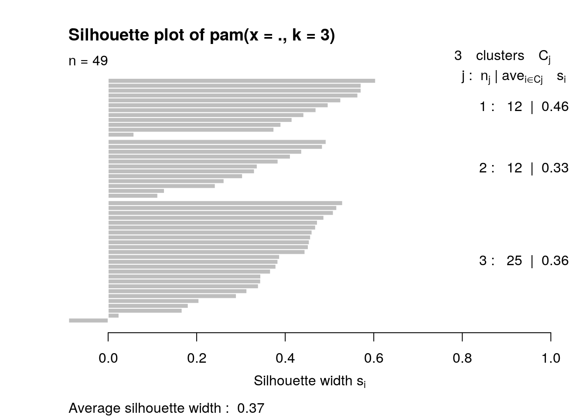

This is an R Markdown document. Markdown is a simple formatting syntax for authoring HTML, PDF, and MS Word documents. For more details on using R Markdown see http://rmarkdown.rstudio.com.
When you click the Knit button a document will be generated that includes both content as well as the output of any embedded R code chunks within the document. You can embed an R code chunk like this:
library(readr)
library(tidyr)
library(tidyverse)## ── Attaching packages ────────────────────────────────────────────────── tidyverse 1.3.0 ──## ✓ ggplot2 3.3.2 ✓ dplyr 1.0.1
## ✓ tibble 3.0.3 ✓ stringr 1.4.0
## ✓ purrr 0.3.4 ✓ forcats 0.5.0## ── Conflicts ───────────────────────────────────────────────────── tidyverse_conflicts() ──
## x dplyr::filter() masks stats::filter()
## x dplyr::lag() masks stats::lag()Public_Schools <- read.csv("Public Schools.csv")
USArrests <- read.csv("USArrests.csv")
Census_Regions <- read.csv("Census Regions.csv")Introduction: The first data set that I chose is from the sandwich package, titled Public Schools. This data set provides the per capita expenditures on public schools and per capita income per U.S. state in 1979. The second dataset that I chose was from the datasets package, titled USArrests. This data set provides information from 1973 on the percentage of the population living in urban areas along with the number of arrests for assault, murder, and rape per 100,000 residents in each U.S. state, not including the District of Columbia. While the data are from different years, I do not believe that the changes in crime rates from 1973 to 1979 in states across the U.S. would have been significant enough to render combining both datasets invalid. I found and downloaded the Public Schools and USArrests datasets from the website: https: //vincentarelbundock.github.io/Rdatasets/datasets.html. The third dataset was one that I created called Census regions, which provides the census region for each state. I included this so that I would have an additional categorical variable to work on. I chose to analyze these sets of data because I am interested in issues of social justice and education. While current research has shown that higher education expenditure is correlated with reduced crime, I was currious as to whether this trend was true back in the 1970s, around the time in which American neoliberalism was just beginning. I anticipate finding an inverse correlation between per capita expenditure on education and violent crime rates.
# joining/merging
joined_table <- left_join(USArrests, Public_Schools)## Joining, by = "State"fully_joined <- left_join(joined_table, Census_Regions)## Joining, by = "State"I used the left join to combine the first two, with the USArrests data set on the left because I wanted them joined by state, without including Washington D.C., and the USArrests dataset is the one that didn't include Washington D.C. This allowed me to drop Washington D.C. from the dataset. I used left join to add the Census Region because I wanted to join the region based on the State names.
#Mutate for new variable
fully_joined<- fully_joined %>% na.omit %>% mutate(Total_Violent_Crime_Arrests= Murder + Assault + Rape)I removed the NAs from my dataset and created a variable for the total amount of violent crime arrests per 100,000, which sums the arrests per 100,000 residents for rape, murder, and assault.
fully_joined %>% arrange(desc(Total_Violent_Crime_Arrests))## State Murder Assault UrbanPop Rape Per.Capita.Expenditure
## 1 Florida 15.4 335 80 31.9 316
## 2 North Carolina 13.0 337 45 16.1 335
## 3 Maryland 11.3 300 67 27.8 427
## 4 Arizona 8.1 294 80 31.0 339
## 5 New Mexico 11.4 285 70 32.1 388
## 6 California 9.0 276 91 40.6 387
## 7 Alaska 10.0 263 48 44.5 821
## 8 South Carolina 14.4 279 48 22.5 315
## 9 Nevada 12.2 252 81 46.0 359
## 10 Michigan 12.1 255 74 35.1 466
## 11 Mississippi 16.1 259 44 17.1 259
## 12 New York 11.1 254 86 26.1 447
## 13 Louisiana 15.4 249 66 22.2 316
## 14 Illinois 10.4 249 83 24.0 437
## 15 Alabama 13.2 236 58 21.2 275
## 16 Delaware 5.9 238 72 15.8 424
## 17 Georgia 17.4 211 60 25.8 265
## 18 Colorado 7.9 204 78 38.7 452
## 19 Texas 12.7 201 80 25.5 315
## 20 Tennessee 13.2 188 59 26.9 268
## 21 Arkansas 8.8 190 50 19.5 275
## 22 Missouri 9.0 178 70 28.2 274
## 23 Oregon 4.9 159 67 29.3 397
## 24 Rhode Island 3.4 174 87 8.3 342
## 25 New Jersey 7.4 159 89 18.8 423
## 26 Virginia 8.5 156 63 20.7 356
## 27 Wyoming 6.8 161 60 15.6 500
## 28 Oklahoma 6.6 151 68 20.0 320
## 29 Washington 4.0 145 73 26.2 415
## 30 Massachusetts 4.4 149 85 16.3 427
## 31 Ohio 7.3 120 75 21.4 322
## 32 Utah 3.2 120 80 22.9 417
## 33 Indiana 7.2 113 65 21.0 345
## 34 Kansas 6.0 115 66 18.0 355
## 35 Idaho 2.6 120 54 14.2 304
## 36 Kentucky 9.7 109 52 16.3 260
## 37 Montana 6.0 109 53 16.4 433
## 38 Pennsylvania 6.3 106 72 14.9 412
## 39 Connecticut 3.3 110 77 11.1 531
## 40 Nebraska 4.3 102 62 16.5 294
## 41 South Dakota 3.8 86 45 12.8 321
## 42 West Virginia 5.7 81 39 9.3 320
## 43 Maine 2.1 83 51 7.8 327
## 44 Minnesota 2.7 72 66 14.9 477
## 45 Hawaii 5.3 46 83 20.2 403
## 46 Iowa 2.2 56 57 11.3 431
## 47 New Hampshire 2.1 57 56 9.5 279
## 48 Vermont 2.2 48 32 11.2 353
## 49 North Dakota 0.8 45 44 7.3 311
## Per.Capita.Income Region Total_Violent_Crime_Arrests
## 1 7505 South 382.3
## 2 6607 South 366.1
## 3 8306 South 339.1
## 4 7374 West 333.1
## 5 6505 West 328.5
## 6 8850 West 325.6
## 7 10851 West 317.5
## 8 6242 South 315.9
## 9 9032 West 310.2
## 10 8442 Midwest 302.2
## 11 5736 South 292.2
## 12 8267 Northeast 291.2
## 13 6640 South 286.6
## 14 8745 Midwest 283.4
## 15 6247 South 270.4
## 16 8604 South 259.7
## 17 6700 South 254.2
## 18 8001 West 250.6
## 19 7697 South 239.2
## 20 6489 South 228.1
## 21 6183 South 218.3
## 22 7342 Midwest 215.2
## 23 7839 West 193.2
## 24 7526 Northeast 185.7
## 25 8818 Northeast 185.2
## 26 7624 South 185.2
## 27 9096 West 183.4
## 28 6951 South 177.6
## 29 8450 West 175.2
## 30 8063 Northeast 169.7
## 31 7812 Midwest 148.7
## 32 6622 West 146.1
## 33 7696 Midwest 141.2
## 34 8001 Midwest 139.0
## 35 6813 West 136.8
## 36 6615 South 135.0
## 37 7051 West 131.4
## 38 7733 Northeast 127.2
## 39 8914 Northeast 124.4
## 40 7391 Midwest 122.8
## 41 6841 Midwest 102.6
## 42 6456 South 96.0
## 43 6333 Northeast 92.9
## 44 7847 Midwest 89.6
## 45 8380 West 71.5
## 46 7873 Midwest 69.5
## 47 7277 Northeast 68.6
## 48 6541 Northeast 61.4
## 49 7478 Midwest 53.1I arranged the data to see which state had the highest total violent crime arrests. Based on my data, this state was Florida, with a rate of roughly 382 arrests for violent crimes per 100,000 residents.
#overall statistics
#correlation matrix
numeric <- fully_joined %>% select(Murder, Assault, Rape, UrbanPop, `Per.Capita.Expenditure`, `Per.Capita.Income`, Total_Violent_Crime_Arrests) %>% filter(complete.cases(fully_joined))
correlation <- numeric %>% cor(use="pair")
correlation ## Murder Assault Rape UrbanPop
## Murder 1.00000000 0.79511458 0.5512156 0.07142472
## Assault 0.79511458 1.00000000 0.6545509 0.26538561
## Rape 0.55121558 0.65455090 1.0000000 0.41751065
## UrbanPop 0.07142472 0.26538561 0.4175106 1.00000000
## Per.Capita.Expenditure -0.16916741 0.08310764 0.3121297 0.20430482
## Per.Capita.Income -0.13747683 0.09538879 0.4121164 0.50213594
## Total_Violent_Crime_Arrests 0.81273017 0.99651648 0.7115469 0.28257405
## Per.Capita.Expenditure Per.Capita.Income
## Murder -0.16916741 -0.13747683
## Assault 0.08310764 0.09538879
## Rape 0.31212968 0.41211642
## UrbanPop 0.20430482 0.50213594
## Per.Capita.Expenditure 1.00000000 0.78532441
## Per.Capita.Income 0.78532441 1.00000000
## Total_Violent_Crime_Arrests 0.09784815 0.12041951
## Total_Violent_Crime_Arrests
## Murder 0.81273017
## Assault 0.99651648
## Rape 0.71154688
## UrbanPop 0.28257405
## Per.Capita.Expenditure 0.09784815
## Per.Capita.Income 0.12041951
## Total_Violent_Crime_Arrests 1.00000000#summary table
library(kableExtra)##
## Attaching package: 'kableExtra'## The following object is masked from 'package:dplyr':
##
## group_rowsoverall_table <- fully_joined %>% rename('Total.Crime.Arrests'='Total_Violent_Crime_Arrests') %>% summarize_if(is.numeric,list(mean=mean, sd=sd, var=var, min=min, max=max, median=median), na.rm=T) %>% pivot_longer(cols=Murder_mean:Total.Crime.Arrests_median) %>% separate(name,into=c("type", "stat"), sep="_") %>% kbl() %>%
kable_paper("hover", full_width = F)
overall_table| type | stat | value |
|---|---|---|
| Murder | mean | 7.893878e+00 |
| Assault | mean | 1.731633e+02 |
| UrbanPop | mean | 6.553061e+01 |
| Rape | mean | 2.144490e+01 |
| Per.Capita.Expenditure | mean | 3.721429e+02 |
| Per.Capita.Income | mean | 7.559306e+03 |
| Total.Crime.Arrests | mean | 2.025020e+02 |
| Murder | sd | 4.335147e+00 |
| Assault | sd | 8.243213e+01 |
| UrbanPop | sd | 1.462461e+01 |
| Rape | sd | 9.340415e+00 |
| Per.Capita.Expenditure | sd | 9.519913e+01 |
| Per.Capita.Income | sd | 1.001512e+03 |
| Total.Crime.Arrests | sd | 9.231443e+01 |
| Murder | var | 1.879350e+01 |
| Assault | var | 6.795056e+03 |
| UrbanPop | var | 2.138793e+02 |
| Rape | var | 8.724336e+01 |
| Per.Capita.Expenditure | var | 9.062875e+03 |
| Per.Capita.Income | var | 1.003026e+06 |
| Total.Crime.Arrests | var | 8.521953e+03 |
| Murder | min | 8.000000e-01 |
| Assault | min | 4.500000e+01 |
| UrbanPop | min | 3.200000e+01 |
| Rape | min | 7.300000e+00 |
| Per.Capita.Expenditure | min | 2.590000e+02 |
| Per.Capita.Income | min | 5.736000e+03 |
| Total.Crime.Arrests | min | 5.310000e+01 |
| Murder | max | 1.740000e+01 |
| Assault | max | 3.370000e+02 |
| UrbanPop | max | 9.100000e+01 |
| Rape | max | 4.600000e+01 |
| Per.Capita.Expenditure | max | 8.210000e+02 |
| Per.Capita.Income | max | 1.085100e+04 |
| Total.Crime.Arrests | max | 3.823000e+02 |
| Murder | median | 7.300000e+00 |
| Assault | median | 1.590000e+02 |
| UrbanPop | median | 6.600000e+01 |
| Rape | median | 2.020000e+01 |
| Per.Capita.Expenditure | median | 3.530000e+02 |
| Per.Capita.Income | median | 7.526000e+03 |
| Total.Crime.Arrests | median | 1.852000e+02 |
For the overall statistics analysis, I created a correlation matrix that demonstrates the relationships among my numeric variables. I also summarized the mean, standard deviation, variance, minimum, maximum, and standard deviation for each numeric variable. These data represent 7 of my 10 required variables. These data show that there is a strong correlation between states' per capita education expenditure and per capita income and a slight inverse correlation between per capita education expenditure and arrests for murder.
#grouped by Region and state statistics
Region.table <- fully_joined %>% group_by(Region) %>% summarize(mean_crime= mean(Total_Violent_Crime_Arrests, na.rm=T), mean_education_expenditure=mean(`Per.Capita.Expenditure`, na.rm=T), sd_crime=sd(Total_Violent_Crime_Arrests, na.rm=T) , sd_education_expenditure= sd(`Per.Capita.Expenditure`, na.rm=T), median_crime=median(Total_Violent_Crime_Arrests, na.rm=T), median_education_expenditure=median(`Per.Capita.Expenditure`, na.rm=T) ) %>% arrange(desc(median_crime))## `summarise()` ungrouping output (override with `.groups` argument)Region.table %>% kbl() %>%
kable_paper("hover", full_width = F)| Region | mean_crime | mean_education_expenditure | sd_crime | sd_education_expenditure | median_crime | median_education_expenditure |
|---|---|---|---|---|---|---|
| South | 252.8688 | 315.3750 | 79.48319 | 52.04213 | 256.95 | 315.5 |
| West | 223.3154 | 431.9231 | 91.51570 | 126.90184 | 193.20 | 403.0 |
| Midwest | 151.5727 | 366.6364 | 82.39477 | 72.64884 | 139.00 | 345.0 |
| Northeast | 145.1444 | 393.4444 | 72.05762 | 75.76957 | 127.20 | 412.0 |
Region.State.table <- fully_joined %>% group_by(State,Region) %>% summarize(median_crime=median(Total_Violent_Crime_Arrests, na.rm=T), median_education_expenditure=median(`Per.Capita.Expenditure`, na.rm=T))## `summarise()` regrouping output by 'State' (override with `.groups` argument)Region.State.table %>% filter( Region =="South") %>% arrange(desc(median_crime))## # A tibble: 16 x 4
## # Groups: State [16]
## State Region median_crime median_education_expenditure
## <fct> <fct> <dbl> <int>
## 1 Florida South 382. 316
## 2 North Carolina South 366. 335
## 3 Maryland South 339. 427
## 4 South Carolina South 316. 315
## 5 Mississippi South 292. 259
## 6 Louisiana South 287. 316
## 7 Alabama South 270. 275
## 8 Delaware South 260. 424
## 9 Georgia South 254. 265
## 10 Texas South 239. 315
## 11 Tennessee South 228. 268
## 12 Arkansas South 218. 275
## 13 Virginia South 185. 356
## 14 Oklahoma South 178. 320
## 15 Kentucky South 135 260
## 16 West Virginia South 96 320I then chose to summarize this data grouped by Census Region to determine which Region had the most violent crime arrests, and which spent the most on education. The results showed that the South had the highest median and mean arrests and had the lowest median and mean expenditures on education, while the Northeast had the lowest median crime arrests and the highest median education expenditure. I chose to arrange based on median values, rather than the means, because of the high standard deviations among the variables. In addition to calculating median and mean crime and expenditure, I also calculated the standard deviation for both measures. These data represent the remaining 3 of my 10 summary statistics. I also created a table that grouped by state and region and filtered to find the state in the South with the most crime arrests, which was Florida.
#Visualizing
tidycor <- correlation %>% as.data.frame %>% rownames_to_column("var1") %>% pivot_longer(-1,names_to="var2",values_to="correlation")
tidycor%>%ggplot(aes(var1,var2,fill=correlation)) +
geom_tile() + scale_fill_gradient2(low="blue",mid="white",high="purple") + geom_text(aes(label=round(correlation,2)),color = "black", size = 3) + xlab("variable 1") + ylab("variable 2") + ggtitle("Correlation Heat Map") + theme(axis.text.x = element_text(size=8, angle = 90))
#1st ggplot
fully_joined %>% ggplot(aes(`Per.Capita.Expenditure`, `Per.Capita.Income`, color=Region)) + geom_point(size=2) + ggtitle("US Education Expenditure vs Income by Census Region") + scale_x_continuous(breaks=seq(0,900, 100)) + xlab("Per Capita Education Expenditure ($)") + ylab("Per Capita Income ($)") + theme(plot.title = element_text(size=12)) + facet_wrap(~Region) + theme(legend.position="none") + geom_smooth(method='lm', se=FALSE)## `geom_smooth()` using formula 'y ~ x'
Based on my correlation heat map, one of the strongest correlation values was between Per Capita Education Expenditure and Per Capita Income. I therefore chose to analyze this trend facet wraped by the U.S. Census Regions. My ggplot shows that for each region, there is a positive correlation between education expenditure and income. The plots also show that the West region has the greatest variation in education expenditure, and that the Midwest has the weakest correlation between expenditure and income, as evidenced by the smallest slope.
#2nd ggplot
fully_joined %>% select(State, Murder, Assault, Rape, Region) %>% pivot_longer(c("Murder", "Assault", "Rape"), names_to="Crime Type", values_to="count") %>% ggplot(aes(x=Region, y=count, fill=`Crime Type`)) + geom_bar(stat="summary", fun=median, position="dodge") + xlab("US Census Region") + ylab("Number of Arrests per 100,000") + ggtitle("Violent Crime Arrests by Type per US Census Region") + scale_fill_brewer(palette="Spectral") + scale_y_continuous(breaks=seq(0,300, 30))
After analyzing trends in expenditure and income, I wanted to view the breakdown of violent crime arrests in each region based on the type of crime (assault, murder, rape). I decided to plot the median, rather than the mean, because all four regions showed high variance and high standard deviations in crime. The data show that the South has the highest median number of arrests per 100,000 for assault and murder, and that the West has the highest number of arrests per 100,000 for rape. I also used the pivot command in this visualization in order to group the data such that murder, assault, rape where put into one column under "Crime Type" and there values were placed under "Count."
#Kmeans, PAM, PCA
#identify optimal number of clusters with numerical variables of interest
library(cluster)
pam_data<- fully_joined %>% select(`Per.Capita.Expenditure`, `Per.Capita.Income`, Total_Violent_Crime_Arrests)
sil_width<-vector()
for(i in 2:10){
pam_fit <- pam(pam_data, k = i)
sil_width[i] <- pam_fit$silinfo$avg.width
}
ggplot()+geom_line(aes(x=1:10,y=sil_width))+scale_x_continuous(name="k",breaks=1:10)## Warning: Removed 1 row(s) containing missing values (geom_path).
pam_data## Per.Capita.Expenditure Per.Capita.Income Total_Violent_Crime_Arrests
## 1 275 6247 270.4
## 2 821 10851 317.5
## 3 339 7374 333.1
## 4 275 6183 218.3
## 5 387 8850 325.6
## 6 452 8001 250.6
## 7 531 8914 124.4
## 8 424 8604 259.7
## 9 316 7505 382.3
## 10 265 6700 254.2
## 11 403 8380 71.5
## 12 304 6813 136.8
## 13 437 8745 283.4
## 14 345 7696 141.2
## 15 431 7873 69.5
## 16 355 8001 139.0
## 17 260 6615 135.0
## 18 316 6640 286.6
## 19 327 6333 92.9
## 20 427 8306 339.1
## 21 427 8063 169.7
## 22 466 8442 302.2
## 23 477 7847 89.6
## 24 259 5736 292.2
## 25 274 7342 215.2
## 26 433 7051 131.4
## 27 294 7391 122.8
## 28 359 9032 310.2
## 29 279 7277 68.6
## 30 423 8818 185.2
## 31 388 6505 328.5
## 32 447 8267 291.2
## 33 335 6607 366.1
## 34 311 7478 53.1
## 35 322 7812 148.7
## 36 320 6951 177.6
## 37 397 7839 193.2
## 38 412 7733 127.2
## 39 342 7526 185.7
## 40 315 6242 315.9
## 41 321 6841 102.6
## 42 268 6489 228.1
## 43 315 7697 239.2
## 44 417 6622 146.1
## 45 353 6541 61.4
## 46 356 7624 185.2
## 47 415 8450 175.2
## 48 320 6456 96.0
## 49 500 9096 183.4#cluster analysis + scale variable
pam1 <-pam_data %>% scale %>% pam(k=3)
pam1## Medoids:
## ID Per.Capita.Expenditure Per.Capita.Income Total_Violent_Crime_Arrests
## [1,] 18 -0.5897413 -0.9179182 0.9109948
## [2,] 13 0.6812787 1.1839038 0.8763306
## [3,] 14 -0.2851166 0.1364875 -0.6640570
## Clustering vector:
## [1] 1 2 1 1 2 2 2 2 1 1 3 3 2 3 3 3 3 1 3 2 3 2 3 1 1 3 3 2 3 2 1 2 1 3 3 3 3 3
## [39] 3 1 3 1 3 3 3 3 3 3 2
## Objective function:
## build swap
## 1.0139525 0.9651023
##
## Available components:
## [1] "medoids" "id.med" "clustering" "objective" "isolation"
## [6] "clusinfo" "silinfo" "diss" "call" "data"# summarize clusters
pam_clust <- pam_data %>% mutate(cluster=as.factor(pam1$clustering))
pam_clust %>% group_by(cluster) %>% summarize_if(is.numeric,mean,na.rm=T)## # A tibble: 3 x 4
## cluster Per.Capita.Expenditure Per.Capita.Income Total_Violent_Crime_Arrests
## <fct> <dbl> <dbl> <dbl>
## 1 1 302. 6631. 291.
## 2 2 473. 8827. 264.
## 3 3 357. 7396. 130.fully_joined%>%slice(pam1$id.med)## State Murder Assault UrbanPop Rape Per.Capita.Expenditure
## 1 Louisiana 15.4 249 66 22.2 316
## 2 Illinois 10.4 249 83 24.0 437
## 3 Indiana 7.2 113 65 21.0 345
## Per.Capita.Income Region Total_Violent_Crime_Arrests
## 1 6640 South 286.6
## 2 8745 Midwest 283.4
## 3 7696 Midwest 141.2I first used the silhoutte method with my three numerical values Per Capita State Education Expenditure, Per Capita State Income, and State Total Violent Crime Arrests in order to identify the optimal number of clusters, which in my case, was 3. I then scaled the data and performed the PAM clustering. Finally, I summarized the clusters in order to see the average values for each variable and their medoids.
#visualize clusters
pam_clust <- pam_data %>% mutate(cluster=as.factor(pam1$clustering))
pam_clust %>% ggplot(aes(`Per.Capita.Expenditure`,Total_Violent_Crime_Arrests,color=cluster)) + geom_point(size=2) + xlab("State's Per Capita Education Expenditure") + ylab("State's Violent Crimes Arrests")
library(GGally)## Registered S3 method overwritten by 'GGally':
## method from
## +.gg ggplot2ggpairs(pam_clust, columns=1:3, aes(color=cluster))+ theme(axis.text.x = element_text(size=6))
After running the PAM clustering, I created a plot that visualizes the clusters using the two numerical variables Per Capita Education Expenditure and Total Violent Crime Arrests. I then created a ggpairs plot that visualizes the clusters among all three variables of interest (Per Capita Education Expenditure, Per Capita Income, and Total Violent Crimes Arrests). Both graphs show that there is significant overlap between the clusters.
plot(pam1,which=2)
The last thing that I did was determine goodness-of-fit. The average silhouette width of 0.37 shows that the structure is weak and could be artificial. This indiacates poor separation and cohesion of clusters.
The overall results show that there is a strong correlation between a state's per capita income and per capita expenditure on education. This is evidenced by the high correlation value of 0.785. The overlapping of the clusters and poor goodness-of-fit demonstrate that there is high variance within the clusters.